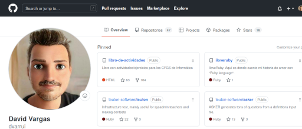
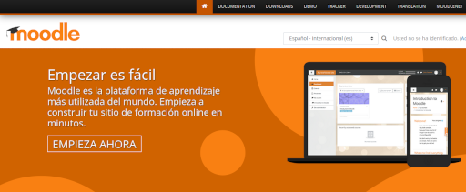
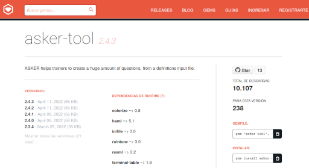
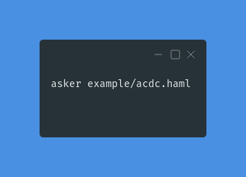
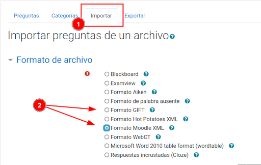
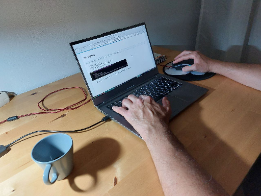

Asker
Tu generador de preguntas para Moodle

1. Agradecimientos
- Organización Ujilliurex
- Baltasar Ortega Bort (Twitter: @baltolkien)
- Fundador de KDE blog (https://www.kdeblog.com/author/balta)
- Profesor de ciencias en Secundaria.
- Comunidad Asker Telegram
- Equipo Teuton Software

2. Presentación
- David Vargas Ruiz
- Ingeniero Informático por la ULPGC
- Profesor FP de Sistemas (IES Puerto de la Cruz).
- Ruby, software libre y StarWars.

3. El problema
Como profesor... siempre tenemos poco tiempo.
- Corregir es aburrido, pero el feedback es muy importante.
- Buscar formas/herramientas para automatizar tareas (Lo reconozco… soy más informático que profesor)
- Moodle nos ayuda mucho.
- Los cuestionarios de Moodle se corrigen solos pero… las preguntas hay que crearlas.

4. Buscando la felicidad del profesorado
Centrando en foco en el profesorado.
Si lo profesores están felices...
Serán más productivos y como resultado...
Los alumnos aprenderán mejor.
Pero… ¿cómo hacemos para crear las preguntas de forma fácil?
5. ¿Qué es Asker?
- Es un generador de preguntas que luego se pueden importar fácilmente en Moodle (Formatos XML y Gift).
- Software libre multiplataforma
- Desarrollado en Ruby (Sencillo y rápido).

6. Instalación
- Instalación de Ruby:
sudo apt install ruby (MacOS y OpenSUSE se pueden saltar este punto)
- Instalación de la gema:
sudo gem install asker-tool.

7. ¿Cómo funciona?
¿Cómo hacemos funcionar Asker?
- Abrimos un terminal y
- ejecutamos el comando asker:
asker PATH/TO/INPUT/FILE

8. Ficheros de salida
¿Y los resultados? La salida se guarda en la carpeta "output".

9. Importar preguntas
El fichero de salida `moodle.xml` se importa en Moodle.

Los "inputs" son las entradas que necesita Asker para trabajar.
- Fichero de texto.
- Mapa conceptual sin enlaces explícitos.
- Formato de entrada HAML y/o XML.

El profesor domina su materia y tiene en su mente el mapa conceptual.
11. Asker en acción
Veamos un ejemplo de Asker en acción... min = [11, 12, 13, 14]

Creando nuestro propio input...
- Fichero en texto plano.
- Context
- Concept: names
- Concept: tags
- Concept: defs
¿Dónde encuentro ejemplos para no empezar de cero?
Ejemplos en la documentación de Asker:
- https://github.com/teuton-software/asker/tree/master/docs/examples
Inputs reales usados en FP Informática:
- https://github.com/dvarrui/asker-inputs
- Concept: tables y rows
- Concept: def con ficheros
- Creando más ficheros HAML en la misma carpeta.

17. Cómo aprender más sobre Asker
- Documentación:
- GitHub: https://github.com/teuton-software/asker
- Rubygems: https://rubygems/gems/asker-tool
- O ponte en contacto con nuestra pequeña comunidad.

18. Ideas para el futuro
Todavía tenemos muchas peticiones que ir implementando...
Nuestro plan para el 2022
- https://github.com/teuton-software/asker/blob/master/docs/todo.md
- Promoción
- Desarrollo abierto y colaborativo
- Reuniones
19. Fin
puts "Muchas gracias!" * 1000
- GitHub:
@teuton-software
- Grupo de Telegram:
https://t.me/+FsuphhJSaaGVpKcv
- Email:
teuton.software@protonmail.com